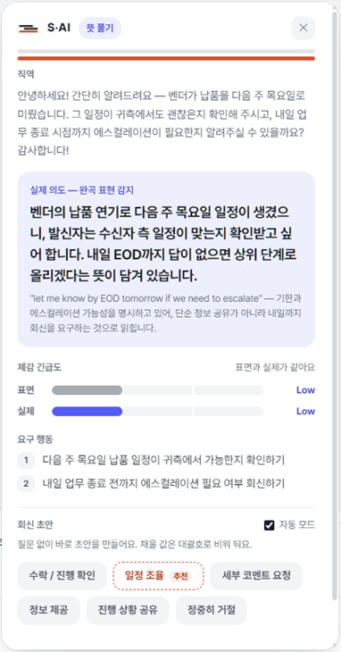
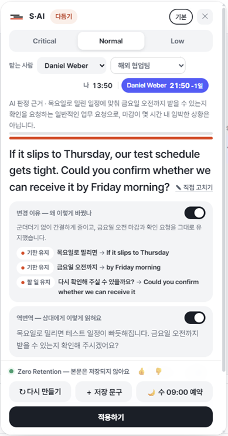

S·AI
해외 동료가 이렇게 답했어요
이 말,
좋다는 걸까?
“That's an interesting approach. Let's circle back on this next quarter.”
직역하면
직역그것은 흥미로운 접근이네요. 다음 분기에 이 건을 다시 논의해 봅시다.
사이가 본
실제 의도
실제 의도상대방은 이 제안을 당장 진행하지 않겠다는 뜻으로, 다음 분기로 미루자고 완곡하게 말하고 있습니다. 실질적으로는 지금 결정이나 조치를 요구하지 않는 보류 신호입니다.

받은 메시지를 선택하고 아이콘만 누르면
크롬 확장
「사이」
받을 땐 속뜻을 풀고, 보낼 땐 다듬어요.
지금은 모두 무료 · 본문은 저장하지 않아요.
프로필 링크에서 설치
해외 동료에게 보낼 말
“빨리 해주세요”
영어로는?
이거 확인 좀 빨리 해주세요. 내일까지 안 되면 곤란합니다.
사이가 다듬으면
다듬은 문장 CRITICALCould you please look into this as soon as possible? If it's not resolved by tomorrow, it will cause us real problems.
상대에게는
이렇게 읽혀요
역번역이것 가능한 한 빨리 확인해 주시겠어요? 내일까지 해결되지 않으면 저희에게 실질적인 문제가 생길 것입니다.

무엇을 왜 바꿨는지까지 보여 줘요
보내기 전에,
한 번 더.
크롬 확장 「사이」
지금은 모두 무료 · 본문은 저장하지 않아요.
프로필 링크에서 설치
실제 사이 결과(빠른 모드) · AI 결과는 매번 조금씩 다를 수 있어요